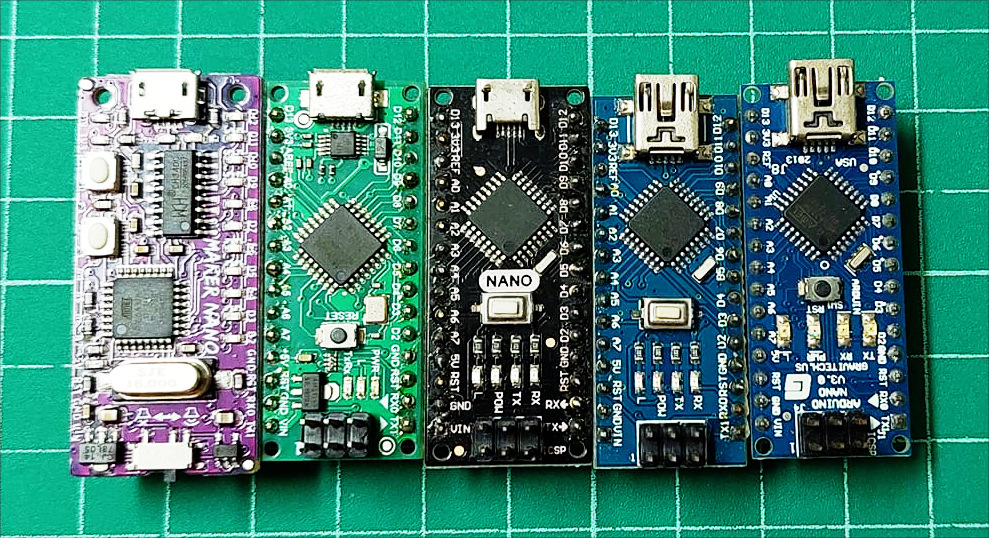
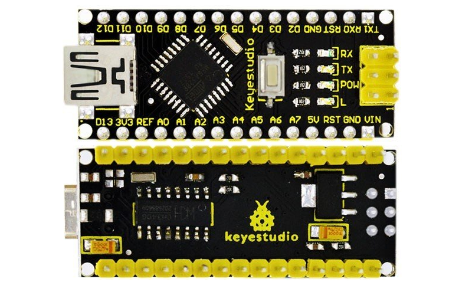

บอร์ด Arduino Nano#
บอร์ด Arduino มีหลายรูปแบบให้เลือกใช้งาน บอร์ด "คลาสสิก" ที่ใช้ชิปไมโครคอนโทรลเลอร์ 8 บิต และได้รับความนิยมในช่วงหลายปีที่ผ่านมา ได้แก่ Arduino Uno Rev.3, Arduino Nano v3.x และ Arduino Mega 2560 เป็นต้น บทความนี้นำเสนอแนวทางการเลือกและใช้บอร์ด Arduino Nano v3.x และบอร์ดอื่นที่นำมาใช้แทนที่ได้

รูป: บอร์ด Arduino Nano หลายรูปแบบ
▷ บอร์ด Arduino Nano และแนวทางการเลือกใช้งาน#
บอร์ด Arduino Nano (Official) ในเวอร์ชันปัจจุบันคือ v3.3 มีจำหน่ายอยู่บนเว็บไซต์ของ Arduino Store ที่ราคา US $23.90 หรือ ประมาณ 800 ถึง 900 บาท (ขณะที่เขียนบนบทความนี้)
บอร์ด Arduino Nano มีพื้นฐานในการออกแบบมาจากบอร์ดของบริษัท Gravitech.us และได้มีการอัปเดทมาหลายเวอร์ชัน เช่น บอร์ดที่เป็นเวอร์ชัน v2.x จะใช้ชิป ATmega168 และต่อมาเปลี่ยนมาใช้ชิป ATmega328 สำหรับเวอร์ชัน v3.x
- เวอร์ชัน v3.0 / v3.1 เริ่มจำหน่ายในปีค.ศ. 2009/2010
- เวอร์ชัน v3.2 เริ่มจำหน่ายในปีค.ศ. 2014
- เวอร์ชัน v3.3 เริ่มจำหน่ายในปีค.ศ. 2019
คุณสมบัติของบอร์ด Arduino Nano v3.3
- ใช้ชิป ATMEGA328P-MU (VQFN package)
- On-chip Flash: 32 KB (เป็น Program Memory สำหรับเอาไว้เก็บคำสั่งต่างๆ ของโปรแกรม และพื้นที่ขนาด 2KB ถูกแบ่งไว้สำหรับเก็บโปรแกรมที่เรียกว่า Arduino Bootloader)
- On-chip SRAM: 2 KB (เป็น Volatile Data Memory สำหรับเก็บค่าของตัวแปรหรือข้อมูลต่าง ๆ ในระหว่างการทำงานของโปรแกรม)
- On-chip EEPROM: 1 KB (เป็น Non-volatile Data Memory ข้อมูลจะไม่สูญหายเมื่อบันทึกเก็บไว้ แล้วปิดไฟเลี้ยงหรือหลังจากรีเซตการทำงาน)
- ชิปที่อยู่บนบอร์ดได้มีการติดตั้งโปรแกรม Arduino Nano Bootloader (New Version) มาให้แล้ว
- ทำงานที่ระดับแรงดันไฟฟ้า +5V
- มีขาสำหรับดิจิทัล-อินพุตหรือเอาต์พุต: D0 ~ D13 (14 ขา)
- มี 2 ขาที่ใช้สำหรับการรับส่งข้อมูลแบบบิตอนุกรม: D0 (RX) และ D1 (TX)
- มี 6 ขาที่ใช้สำหรับการสร้างสัญญาณเอาต์พุตแบบ PWM (Pulse Width Modulation): D3, D5, D6, D9, D10, D11
- มีขาสำหรับแอนะล็อก-อินพุต: A0 ~ A7 มีทั้งหมด 8 ขา และก็สามารถใช้เป็นขาดิจิทัลได้ 6 ขา
- มีตัวสร้างสัญญาณ (Crystal) ความถี่ 16MHz
- ใช้แรงดันไฟเลี้ยง VBUS = +5V จากพอร์ต USB (Mini-B USB connector)
- มีฟิวส์แบบรีเซตได้ ( PTC Resettable Fuse) ขนาด 500mA สำหรับป้องกันกระแสเกิน หากใช้ไฟเลี้ยงจากพอร์ต USB
- มีวงจรแปลงแรงดันไฟฟ้ากระแสตรงจากขา VIN (สามารถรับแรงดันได้ในช่วง +7 ~ +12V) ให้เป็น +5V โดยใช้ไอซี LM1117IMPX-5V @0.8A (max.), Dropout 1.2V, SOT-223 ทำหน้าที่เป็นตัวควบคุมแรงดันให้คงที่ (Voltage Regulator)
- มีไดโอดแบบ Schottky (ในทิศทางจากขั้วแอโนดไปยังแคโทด) ต่ออยู่ระหว่าง VUSB กับ +5V ที่ได้จากเอาต์พุตของไอซี LM1117-5V
- ใช้ชิป FTDI FT232RL สำหรับทำหน้าที่เป็น USB-to-Serial Converter และเชื่อมต่อแบบอนุกรมที่ขา D0 (RX) และ D1 (TX) ของบอร์ด (และมีตัวต้านทานแบบ Pull-up ขนาด 1kΩ อย่างละหนึ่งตัวที่ขาทั้งสอง)
- มีวงจร TX_LED และ RX_LED แสดงสถานะลอจิกเมื่อมีการสื่อสารข้อมูลผ่านทาง FT232RL
- สัญญาณ DTR จาก FT232RL ต่อผ่านตัวเก็บประจุไฟฟ้า (100nF) ไปยังขารีเซตของ ATmega328P เพื่อใช้ให้สามารถรีเซตบอร์ดเข้าสู่โหมดการทำงานของบูทโหลดเดอร์ได้โดยอัตโนมัติเมื่อทำขั้นตอน Sketch Upload จากซอฟต์แวร์ Arduino IDE
- มีขา +3.3V (50mA max.) ซึ่งมาจากชิป FT232RL สามารถใช้เป็นแหล่งจ่ายได้
- มีคอนเนกเตอร์สำหรับ ICSP (2x3 pins)
- ไฟล์ของผังวงจร (Schematic): v3.3 | v3.2 | v3.0
รูป: บอร์ด Arduino Nano v3.3 (มุมมองด้านบนและด้านล่างของบอร์ด)
รูป: ผังแสดงตำแหน่งขา (Pinout Map) ของบอร์ด Arduino Nano v3.3 ซึ่งได้จัดทำโดย arduino.cc
รูป: ผังแสดงตำแหน่งขาของบอร์ด Arduino Nano v3.1

รูป: ผังแสดงตำแหน่งขาของบอร์ด Arduino Nano v3.0
รูป: ผังวงจร (Schematic) ของบอร์ด Arduino Nano v3.3 (คลิกเพื่อดูรูปใหญ่ขึ้น)
{kind=link}
บริษัท Arduino ได้ออกแบบบอร์ดใหม่ ซึ่งมีชื่อว่า Arduino Nano Every และเริ่มจำหน่ายในปีค.ศ. 2019 (ราคา US $10.60) แม้ว่าบอร์ดนี้มีชิป ATmega4809 (ใช้ซีพียูตระกูล AVR 8 บิต) เป็นตัวประมวลผลหลัก แต่ชิปรุ่นนี้ ก็มีการจัดการภายในของฮาร์ดแวร์ไม่เหมือนกับชิป ATmega328P และดูเหมือนว่า บอร์ดนี้ยังไม่เป็นที่นิยมในกลุ่มนักพัฒนาหรือเมกเกอร์
▷ บอร์ดอื่นที่สามารถใช้แทน Arduino Nano (Official)#
เนื่องจากบอร์ด Arduino Nano เป็นฮาร์ดแวร์ประเภท OSHW (Open Source Hardware) ทำให้มีบริษัทหรือนักพัฒนา ได้ออกแบบและผลิตบอร์ดที่ใช้งานได้เหมือน หรือใช้แทนบอร์ด Arduino Nano ได้ และมีให้เลือกใช้ได้หลายแบบ มีทั้งบอร์ดที่เป็น Arduino Clone (ทำเลียนแบบแต่มีราคาถูกกว่า) และบอร์ดที่เป็น Arduino Compatible ซึ่งอาจมีการเลือกใช้อุปกรณ์ หรือมีการจัดวางอุปกรณ์บนแผ่น PCB แตกต่างกันไปบ้าง ราคาของบอร์ดโดยทั่วไป ก็อยู่ในช่วง 200 ถึง 300 บาท
ตัวอย่างความแตกต่างของบอร์ด Arduino Nano ที่พบเห็นได้
- แม้ว่าจะใช้ชิป ATmega328P ทำงานที่ความถี่ 16MHz/5V เหมือนกัน แต่อาจมีการเลือกใช้ตัวถังที่แตกต่างกันได้ เช่น QFP และ QFN เป็นต้น
- มีการเปลี่ยนไอซี USB-to-Serial Bridge เช่น เปลี่ยนจาก FT232RL เป็น WCH CH340G (+12MHz External Crystal) ที่มีราคาถูกกว่า และมีขาเอาต์พุต +3.3V @30mA (max.) เช่นกัน (ผู้ใช้ระบบปฏิบัติการ Windows จะต้องติดตั้ง ** CH340 / CH341 Device Driver** เพิ่มด้วย)
- แต่บางกรณีก็มีการเพิ่มไอซี LDO Voltage Regualator สำหรับขา +3.3V ที่สามารถจ่ายกระแสได้มากขึ้น
- มีการเปลี่ยนรูปแบบของคอนเนกเตอร์สำหรับพอร์ต USB เช่น เปลี่ยนจาก Mini-USB เป็น Micro-USB และ USB Type-C เป็นต้น
- มีการเปลี่ยนไอซีควบคุมแรงดันจาก LM1117IMPX-5V เป็น AMS1117-5V เป็นต้น
- บางกรณีก็มีการแทนที่ชิป ATmega328P โดยเลือกใช้ชิป ATmega328PB (32-pin TQFP)
ซึ่งเป็นเวอร์ชันที่ใหม่กว่า ("Backward compatible with ATmega328P") และมีวงจรภายในหลายส่วนที่ไม่เหมือนเดิม
เช่น
- มีขาดิจิทัลที่ใช้ได้ถึง 27 ขา (Arduino Pins: D0 ~ D26)
- มีช่องสัญญาณ PWM จำนวน 10 ช่อง
- มีวงจร I2C จำนวน 2 ชุด
- มีวงจร SPI จำนวน 2 ชุด
- มีวงจร UART จำนวน 2 ชุด
- มีวงจร Peripheral Touch Controller (PTC) เป็นต้น
- หากใช้ชิป ATmega328PB แนะนำให้ติดตั้งและใช้งาน Arduino MiniCore สำหรับการเขียนการเขียนโค้ด Arduino Sketch และชิปต้องมีการติดตั้ง MiniCore bootloader
รูป: ตัวอย่างบอร์ด Arduino Nano (Clone) ที่มีคอนเนกเตอร์สำหรับพอร์ต USB ที่แตกต่างกัน
รูป: บอร์ด Arduino Nano ของ RobotDyn (ประเทศจีน)

รูป: บอร์ด Arduino Nano ของ Keyestudio (ประเทศจีน)
รูป: ตัวอย่างบอร์ดฐาน (Base Boards) สำหรับใช้งานร่วมกับบอร์ด Arduino Nano
▷ การเลือกใช้ชิปไมโครคอนโทรลเลอร์อื่นที่ทำงานได้เหมือน ATmega328P#
ในสถานการณ์ที่ชิปเริ่มขาดตลาด เริ่มตั้งแต่ช่วงโควิด-19 มีแนวโน้มการเปลี่ยนมาใช้ชิปอื่นแทน ATmega328P เช่น LGT8F328P ("Atmel MEGA328P compatible chip - 8F328D architecture") ของบริษัทหนึ่งในประเทศจีน
ตัวอย่างบอร์ดจากประเทศจีน ได้แก่ WeMos/TTGO XI 8F328P-U, Emakefun LGT Nano Pro และ LGT8F328P-LQFP32 MiniEVB
- ชิป LGT8F328P-LQFP32 (32KB Flash & 2KB SRAM) ถูกนำมาใช้แทนที่ ATmega328P แต่ก็มีฟังก์ชันการทำงานที่แตกต่างหลายประการ เช่น สามารถทำงานด้วยความถี่ได้สูงถึง 32MHz ขา I/O ทำงานที่ระดับ 3.3V มีวงจร 8-channel ADC ที่มีความละเอียดที่มากขึ้นเป็น 12 บิต มีวงจร DAC จำนวน 1 ช่อง (ความละเอียด 8 บิต) และใช้ SWD interface ในการโปรแกรม (ไม่ได้ใช้ AVR-ICSP) เป็นต้น
- ชิป LGT8F328P มี Serial Bootloader โปรแกรมไว้ในหน่วยความจำมาให้แล้ว
- มักเลือกใช้ชิป WCH CH340C หรือ Holtek HT42B534-SOP16 สำหรับ USB-to-Serial Bridge และมีคอนเนกเตอร์แบบ Mini-USB หรือ USB Type-C
- มีการพัฒนา Arduino Core สำหรับชิปดังกล่าว เพื่อนำไปใช้งานร่วมกับซอฟต์แวร์ Arduino IDE (สามารถเลือกใช้ Larduino-Core เป็นต้น) และผู้ที่สนใจสามารถศึกษาข้อมูลเพิ่มเติมได้จาก
รูป: ตัวอย่างบอร์ดไมโครคอนโทรลเลอร์ที่ใช้ชิป LGT8F328P
▷ การศึกษาผังวงจรของบอร์ดตัวอย่าง#
บอร์ด Maker Nano v1.0 (June 2020) ของ Cytron บริษัทจากประเทศมาเลเซีย เป็นอีกหนึ่งบอร์ดที่น่าสนใจ เนื่องจากมีการเพิ่มวงจรทรานซิสเตอร์แบบ N-channel MOSFET (BSS138) สำหรับควบคุม LED ขนาดเล็กและใช้กระแสน้อย ใส่ไว้ที่ขา GPIO (D2 ~ D13) เพื่อแสดงสถานะลอจิกโดยไม่ต้องต่อวงจรเพิ่ม มีปุ่มกด(USER Button) หนึ่งปุ่มใส่ไว้บนบอร์ด และยังมีวงจรบัซเซอร์สำหรับสร้างสัญญาณเสียง (Piezoelectric Buzzer) อยู่ด้านล่างของบอร์ด อีกด้วย
หากสังเกตดูจากรูปภาพ จะเห็นได้ว่า ด้านบนมี LED (SMD) จัดเรียงอยู่ใกล้ขา I/O pins และด้านล่างของบอร์ด มีทรานซิสเตอร์ และบัซเซอร์เสียง ซึ่งถูกจัดวางอยู่ระหว่างขา Pin Headers (มีแถวบนและแถวล่าง)
รูป: บอร์ด Maker Nano ของ Cytron (ประเทศมาเลเซีย)
รูป: Maker Nano - Pinout
รูป: ผังวงจรของบอร์ด Maker Nano v1.0 (Schematic PDF file)
เมื่อขาใดขาหนึ่ง (D2 ~ D13) มีเอาต์พุตเป็นลอจิก High หรือประมาณ 5V จะทำให้มอสเฟตที่ขาดังกล่าว ทำหน้าที่เป็นสวิตช์และมีกระแสไหลจาก 5V ผ่านตัวต้านทาน 10kΩ และ LED ซึ่งจะทำให้อยู่ในสถานะ ON แต่ถ้าเอาต์พุตเป็น Low จะทำให้ LED อยู่ในสถานะ OFF
ขาเกต (Gate: G) ของมอสเฟต มีตัวต้านทานแบบ Pulldown ต่ออยู่ (แต่มีค่าความต้านทานสูง) ดังนั้นเมื่อขา GPIO เป็นอินพุต และมีสถานะเป็น Floating (High-Impedance) มอสเฟตจะไม่ทำงาน ดังนั้นจึงทำให้ LED มีสถานะเป็น OFF
เนื่องจากการทำงานของมอสเฟตใช้ระดับแรงดันเป็นตัวควบคุม ไม่ได้ใช้กระแสเหมือนกรณีของทรานซิสเตอร์แบบ BJT ดังนั้นจึงใช้กระแสไฟฟ้าจ่ายจากขา GPIO น้อยมาก และตัวต้านทานจำกัดกระแสที่ต่ออนุกรมกับ LED แต่ละตัว ก็มีค่าความต้านทานค่อนข้างมาก ดังนั้นเมื่อ LED อยู่ในสถานะ ON ก็ใช้กระแสจาก +3.3V ของบอร์ด ไม่มากเช่นกัน
หากสังเกตดูจะเห็นว่า มี Solder Jumper Pads อยู่ด้านล่างของบอร์ด (อ้างอิงโดย J3) ถ้าใช้มีดคัดเตอร์ตัดการเชื่อมต่อทางไฟฟ้า จะทำให้ LED ไม่ติด เพราะจะไม่มีการจ่ายกระแสมาจาก +3.3V ของบอร์ด
ในส่วนของเปียโซ-บัซเซอร์เสียง ขา D8 ต่อเข้ากับขาเกตของมอสเฟตที่เอาไว้ควบคุมการทำงานของบัซเซอร์เสียง แต่ก็มีสวิตซ์แบบ SPDT (Single Pole Double Throw) ให้เลือกได้เปิดหรือปิดการทำงานของบัซเซอร์ได้ด้วย
สำหรับอินพุตจากผู้ใช้ ก็มีปุ่มกด (User Push Button) ที่ขา D2 ซึ่งต่ออนุกรมกับตัวต้านทาน 1kΩ และทำงานแบบ Active Low
บอร์ดนี้มีไอซีที่เป็น Voltage Regulators อยู่ด้านบนของบอร์ด ได้แก่ ไอซี CJ78L05 (SOT-89) สำหรับ +5V @0.1A (จ่ายกระแสได้ค่อนข้างน้อย) โดยรับแรงดันไฟเลี้ยงมาจากขา VIN และไอซี RT9013-33 (SOT-23-5) สำหรับแปลง 5V ให้เป็น +3.3V @0.5A, 250mV Dropout
ในส่วนที่เป็น USB-to-Serial Converter ก็มีการใช้ไอซี CH340G แต่ไม่มีฟิวส์แบบรีเซตได้เพื่อป้องกันกระแสเกินสำหรับ VUSB
▷ กล่าวสรุป#
บอร์ด Arduino Nano ใช้ไมโครคอนโทรลเลอร์แบบ 8 บิต (ATmega328P) เป็นบอร์ดที่มีขนาดเล็ก เหมาะสำหรับการนำไปต่อวงจรบนเบรดบอร์ด และในปัจจุบันก็มีบอร์ดหลายแบบที่สามารถนำมาใช้แทนบอร์ด Arduino Nano ได้เหมือนกัน แต่มีราคาถูกกว่า
อย่างไรก็ตาม ในปัจจุบันก็มีบอร์ดไมโครคอนโทรลเลอร์อื่นอีกจำนวนมาก และรองรับการเขียนโปรแกรมด้วย Arduino ให้เลือกใช้งาน ดังนั้นอาจกล่าวได้ว่า แนวโน้มในการเลือกใช้งานบอร์ด Arduino Nano โดยผู้ใช้ ก็อาจลดลงไปมาก
This work is licensed under a Creative Commons Attribution-ShareAlike 4.0 International License.
Created: 2022-06-26 | Last Updated: 2022-10-23